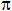

Mathematical Functions
Alpha Anywhere provides the following Mathematical functions.
|
Function |
Description |
|
Returns the average of a CR-LF delimited list of numbers. | |
|
Returns the number of elements in a CR-LF delimited list. | |
|
Converts a hexadecimal number into binary number. | |
|
Converts a hexadecimal number into a character string. | |
|
Converts a hexadecimal number to a decimal number. | |
|
Converts an octal number into binary number. | |
|
Returns the largest number in a CR-LF delimited list of numbers. | |
|
Returns the smallest number in a CR-LF delimited list of numbers. | |
|
Returns the total of elements in a CR-LF delimited list of numbers. | |
|
ABS() |
Returns the absolute value of a Number or numeric expression. |
|
Returns the KB, MB, GB, or TB equivalent of a byte number. | |
|
Converts a number to its equivalent in kilobytes. | |
|
Returns the smallest integer that is greater than or equal to the specified Number. | |
|
Converts a centimeter value to an inch value. | |
|
Returns the hexadecimal equivalent of an integer. | |
|
EXP() |
Returns e raised to the power of the specified Exponent . |
|
Returns the largest integer that is either less than or equal to the specified Number. | |
|
Returns the integer equivalent of a hexadecimal number. | |
|
Returns the twips equivalent of a measurement in inches. | |
|
Converts an inch value to a centimeter value. | |
|
Increments the value referenced by Variable by one. | |
|
INT() |
Truncates the decimal portion of the specified Number and returns the remaining Integer. |
|
LOG() |
Returns the natural logarithm (base e) of the specified Number. |
|
MAX() |
Returns the larger of two numbers. |
|
MIN() |
Returns the smaller of two numbers. |
|
MOD() |
Returns the remainder of the numerator divided by the denominator. |
|
Returns the twips equivalent of a pixels measurement. | |
|
Displays a popup calculator and returns the result of the calculation. | |
|
Returns a random number between 0 and 1. | |
|
Returns a Number rounded down to the specified number of Decimal_Places. | |
|
Returns a Number rounded down to the specified number of Decimal_Places. | |
|
Returns a Number rounded up to the specified number of Decimal_Places. | |
|
Returns an Integer_Result representing the sign of a Number. | |
|
Returns the square root of a positive Number. | |
|
Returns the inches equivalent of a twips measurement. | |
|
Returns the pixel equivalent of a twips measurement. | |
|
VAL() |
Converts a Character_String to a numeric value. |
Alpha Anywhere provides the following Trigonometric functions.
|
Function |
Description |
| ACOS() | Returns the arc cosine of a Radian_Angle. |
| ASIN() | Returns the arc sine of a Radian_Angle |
| ATAN() | Returns the arc tangent of a Radian_Angle. |
| ATAN2() | Returns the arc tangent angle in radians. |
| COS() | Returns the cosine of a Radian_Angle. |
| DTOR() | Converts Angle_In_Degrees (-180 to + 180) to an angle in radians (-  and + ). |
| MATH_PI | Math_PI is a global constant equal to the value of PI ( ). |
| RTOD() | Converts an angle expressed in radians to an angle expressed in degrees. |
| SIN() | Returns the sine of a Radian_Angle. |
| TAN() | Returns the tangent of a Radian_Angle. |